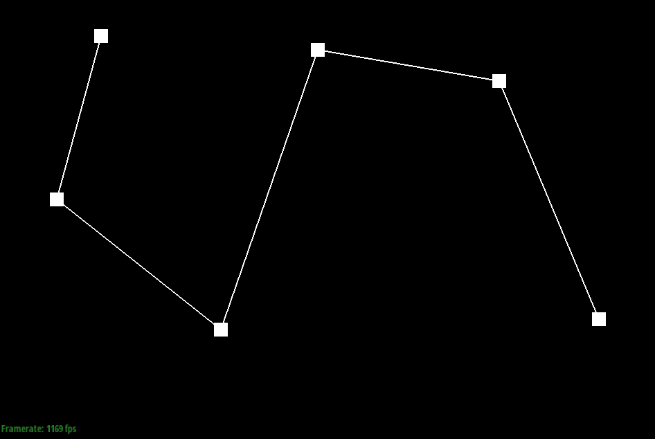
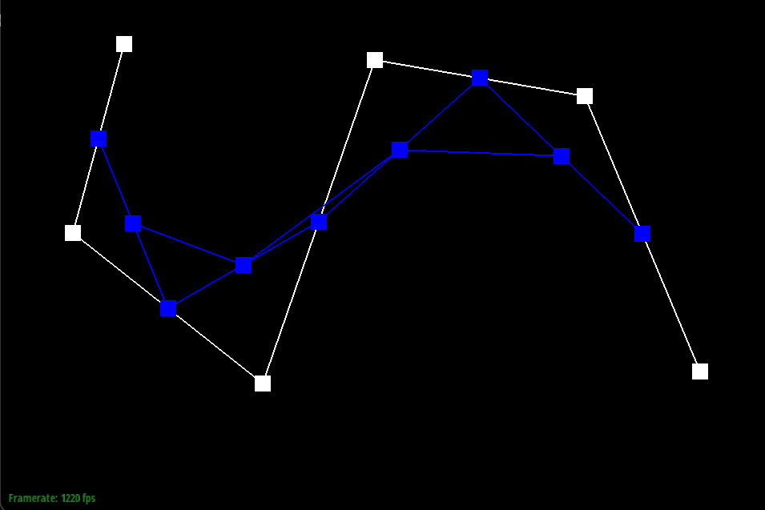
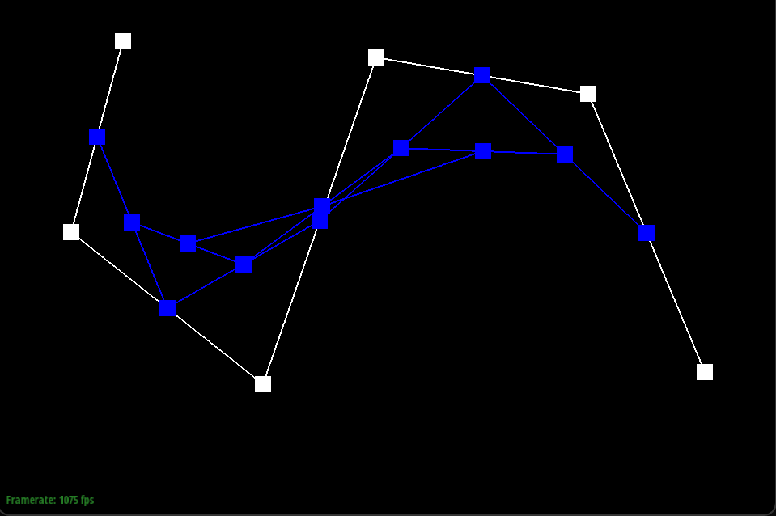
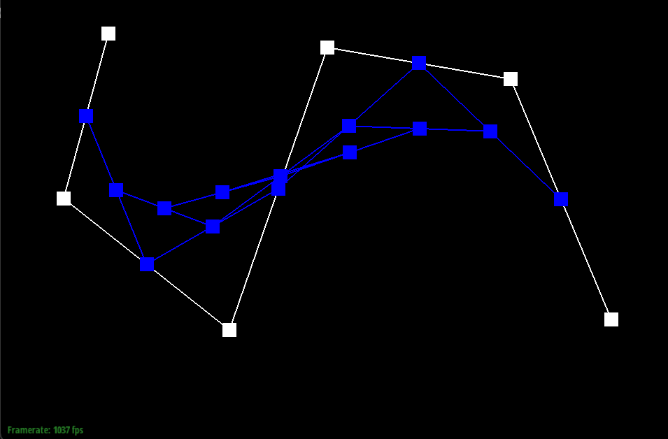
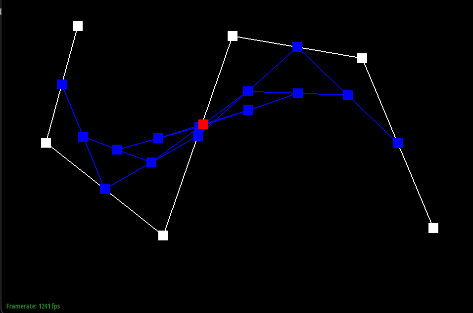
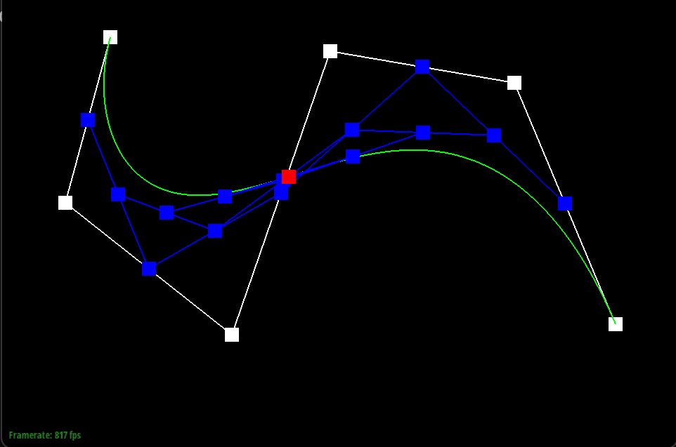
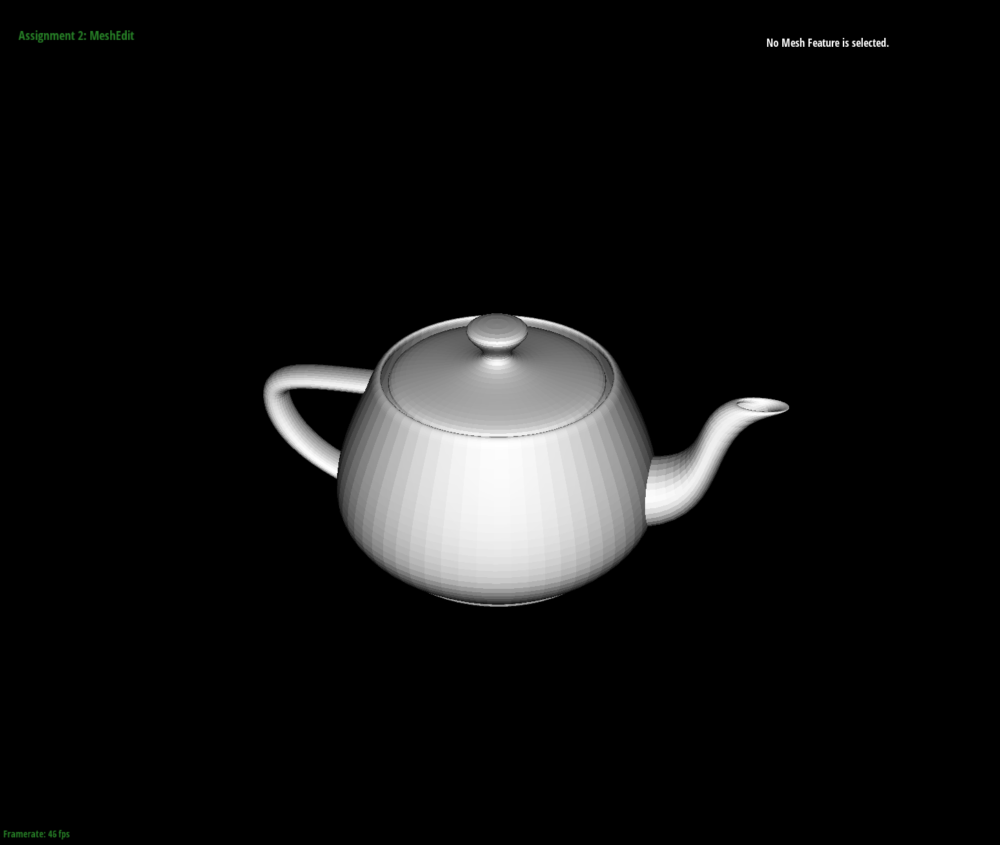
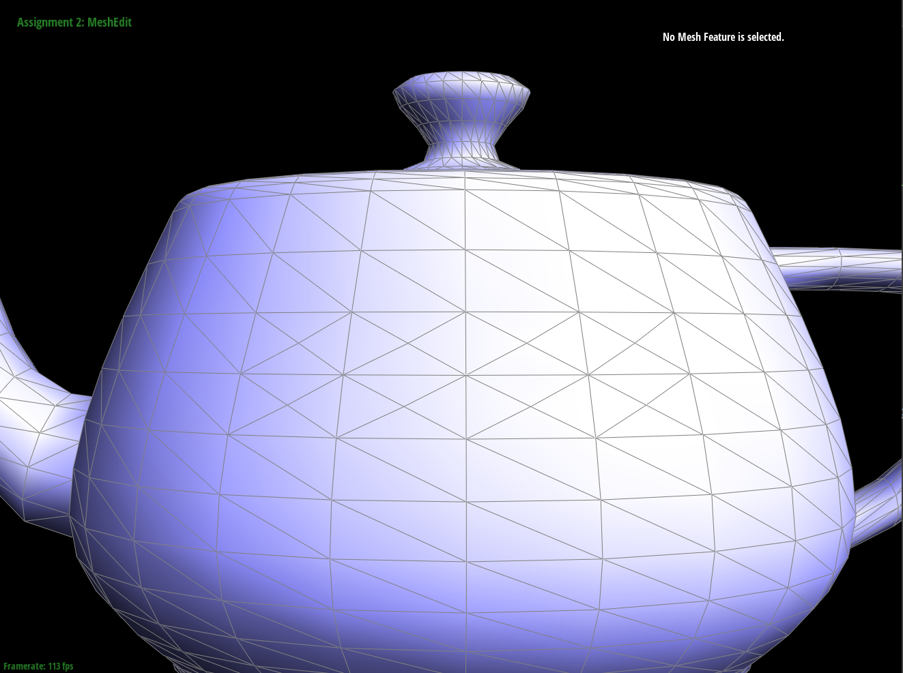

Overview
In this assignment, I learned how to work with meshes and geometric modeling. This was first done through a basic analysis of 1D Bezier curves and how to calculate them with de Casteljau subdivision. This was carried on to the 2D version, Bezier surfaces, using a “moving bezier curve” and calculating them on an n by n grid.
From there, it was onto understanding triangle meshes and the half edge data structure. The bulk of this understanding came through Edge Flip and Edge Split, which forced me to learn what half edges are and what they point to. I got very used to handling functions like face(), twin(), and next() and navigating around the mesh via half-edge structure, which came quite in handy for loop subdivision.
Overall, I have accustomed myself to the language of geometric modelings and triangular meshes, and can navigate the through code effectively.
Section I: Bezier Curves and Surfaces
Part 1: Bezier curves with 1D de Casteljau subdivision (10 pts)
First up to the plate is de Casteljau’s Algorithm, a nifty little tool for evaluating Bezier curves. This algorithm’s power comes from its recursive capabilities, allowing us to define complex curves with recursive linear interpolation to an inserted point that’s a fraction of the way up the line. That fraction is t, a number between 0 and 1 integral for this algorithm, the size of which determines the weights of our interpolations.
We recur using the EvaluateStep() function. Each time we do so, we create one fewer point with our interpolation, so what starts as n points becomes n-1, then n-2, and so on. This is because each step uses new p_i = (1-t)p_i + tp_i+1, so we will create one fewer point in our next iteration. This continues until we reach one final point (the red one in these images), which touches the green Bezier curve itself.
This sequence of images shows the Algorithm in action, with the interpolation of each step shown and another image shown with an altered point location and t value.
|  |  |  |
|  |  |  |

|
Part 2: Bezier surfaces with separable 1D de Casteljau (15 pts)
So, we’ve used de Casteljau for Bezier curves, but what about for full surfaces? It’s quite easy to do so as long as we’re a little creative and describe this surface as a group of curves.
There are three parts of this calculation: first, Evaluate_Step() is kept almost identical to what it was in Part 1, only with coding changes to fit for three dimensional space and the “t” value as a parameter. Then, instead of a line of control points, we instead have an n x n grid of them, which means creating curves takes an adjustment.
Quite simply, we divide these points into rows and columns. In this separation, row i has n points: p_i_0 through p_i_n-1, and they themselves can be evaluated as we did in Part 1 (and written here in Evaluate1D()) to create key points that utilize the Bezier curve parameter u. This new “moving Bezier curve” can itself be evaluated, as it is a series of n points with parameter t = v. The point on this moving Bezier curve that also fits on the final evaluation lies on the surface.
Section II: Triangle Meshes and Half-Edge Data Structure
Part 3: Area-weighted vertex normals (10 pts)
Area weighted vertex normals were tough to implement, requiring great knowledge of vectors and triangles in a simultaneously simple and complex algorithm. It requires using the vertices to find the relevant faces in the mesh, and then finding the normal vectors associated with each face. These vectors could be weighed by the area of their corresponding face, which in turn could be found by doing a cross-product of two of the edges of the triangle (differences between vertices) and normalizing it, which produced twice the area of the triangles (a cross product can quite easily show the area of a rhombus with relevant sides, and half of that rhombus was the triangle(s) in question.
To get between these calculations, I had to make use of halfedges. Conveniently, these edges point to faces, their corresponding “twin” on the same edge, and the “next” half edge in the sequence, so traversing them just required a few method calls. Using “next()” twice got me all three sides of the triangle, and then I could acquire the face vector with “face()” to finally get the final vector of face_normal * triangle area, which was the weighted normal I was searching for.

|

|

|

|
Part 4: Edge flip (15 pts)
Edge Flipping wasn’t too difficult to implement in terms of logic: I simply needed to follow the graphs to assign variables to the original edges, half edges, vertices, and faces of the triangles and then reassign them based on this flip. Lecture 8 (particularly slides 24 and 25) were particularly helpful for this, showing how halfedges, next(), and twin() worked, integral features to notating the whole triangle(s). I followed along to get the values from the old triangle, and then simply used setNeighbors() for each half edge to reposition them within the new “flipped” triangles and changed the half-edges pointing to each other element based on this.
Despite all these fancy schmancy gizmos that “the kids these days” have, I found drawing things out with a pencil and paper to be the most helpful debugging tool. With names like “flip3in” and “edge2reg”, things were bound to get confusing, but if I drew pictures of what was pointing where (and what I wanted it to point to), I could solve a lot of problems. Of course, I didn’t expect my naming convention to add the extra layer of confusion between a “flipped” (twinned) triangle and the ultimate goal of “flipping” an edge and creating two completely different triangles, but well, that’s for the Debugging Journey. Before that, let’s see some screenshots!
First note on my debugging journey: my naive ideas about a triangle and a “flip” triangle were false. What I had called “flip” in my variable was actually the “twin” triangle, NOT the flip. Thus, I had to mentally switch “flip” to “twin,” because the “flipped” triangle(s) were the two with the flipped edges. I kept track of which edges, half edges, vertices, and faces corresponded to these new flipped triangle(s), and most of the issue there was avoided.
Second note, I don’t know my east from my west. I tried to orient the visual from Lecture 8 Slide 24 like a compass with “flip (twin)” on the east and “reg (regular)” on the west, but a misunderstanding of which vertex was taken from each call to vertex() made this compass fail. I had to sort of guess and check which vertex was which, but fortunately, there were only 12 combinations (east and west and north and south were opposites, but which opposites?) I got lucky and found it on like the third combination.

|

|
Part 5: Edge split (15 pts)
This part of the assignment was very similar to Part 4, but required the addition of 3 new edges (two going horizontally and the other essentially serving as the bottom half of the central divider), 6 new half-edges, 2 new faces (because it was now divided into 4 instead of 2) and 1 new vertex (the midpoint M, listed here as Split Vertex). Like before, I had to reorganize the neighbors of each half edge based on the new structure, and ran into the difficulty of labeling each half-edge properly…
My debugging journey, again, came from variable names. While I had anticipated cutting it nicely where the old edges from before the split would be what they were in Part 4 and so on, this wasn’t entirely true. It could have been made true, but then I’d have to deal with the face that their relations aren’t the same, because new edges meant that the next() function wouldn’t work as it once did. I came in with the idea to put the edges mtoa, mtob, and mtod in (and did), and they were quite well named. But the rest of the code was holdover from Part 4 and lead to some confusions, especially when “mtoa top” turned out to be the same as the new reg3in…
To debug this, I simply made a “dictionary” of each term and what it meant on the triangle. The edges (since they were actually well named and easy to mark down) were the easiest to keep track of and used for guidance. If there was a problem, I’d go to that edge and see which half edges it had, what its neighboring vertices were, and which neighboring face corresponded to which half-edge. Then, I would know exactly what to put as the neighbors for the relevant half edge… barring a few mistakes about the direction they were pointing.
If I were to do this again, I’d just make all my variable names based on the original triangle structure: edge AB would be called edgeAB, and its half edges would be AtoB and BtoA. This would make things a lot simpler.
|
|

|

|
You can clearly see that some of the longitude lines are chopped up in nearest samling, while they are preserved in bilinear.
Part 6: Loop subdivision for mesh upsampling (25 pts)
This part basically involved following along through the five steps recommended to me in the skeleton code. I looped through either all edges or vertices for each step depending on what was requested, then made some calculations. I first calculated the “new position” of the edges using the ⅜ * (A+B) + ⅛ * (C+D) formula, then did the same for the vertices using the (1.0 - (n * u)) * original_position + u * original_neighbor_position formula (with n = degree of vector and u = 3/16 for n == 3 or 3/ 8n for any other n).
Next, I split edges (making sure to only use original edges and not create an infinite loop, then flipped relevant edges (if they had 1 new endpoint), and then I made the new positions tracked into the true positions.
Loop subdivision changes the position of vertices and makes new triangles (4 to 1), so of course, it’s going to round out sharp edges. Think of it like each triangle is a straight piece of metal: while 1 will be a sharp edge, 4 smaller ones taking up the same space may fold into the mesh, especially when we use equations to estimate/calculate these new subdivisions and make them uniform. This is most painfully obvious with the cube: with just a few triangles in the initial image, it rounds out very fast, whereas the teapot (which has more triangles and a larger mesh) is less affected from a far and you must zoom in on the edges to notice what is going on.

|

|

|

|

|

|